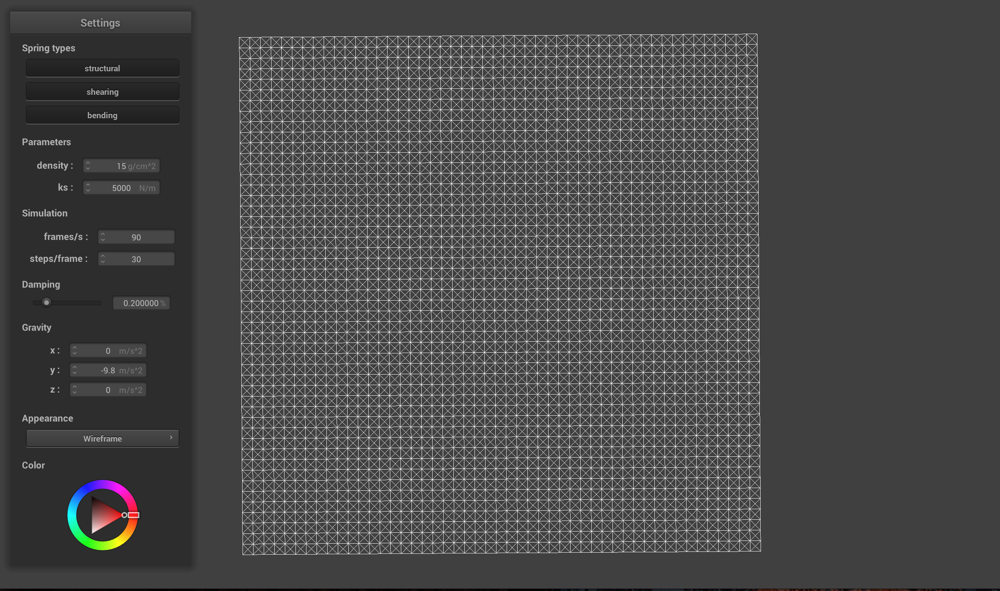
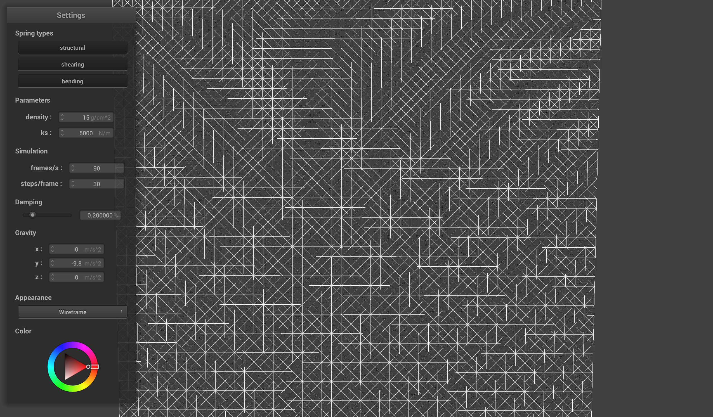
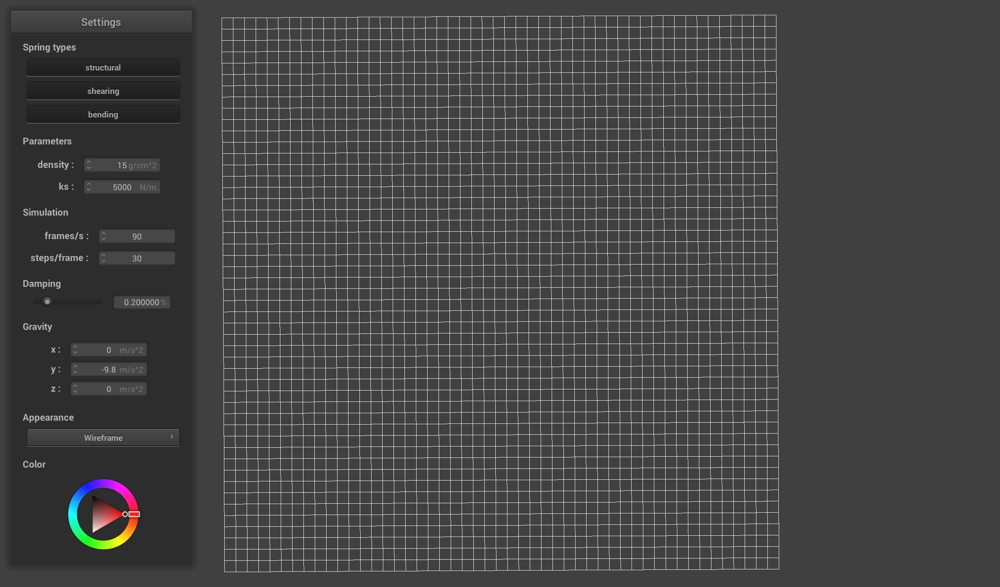
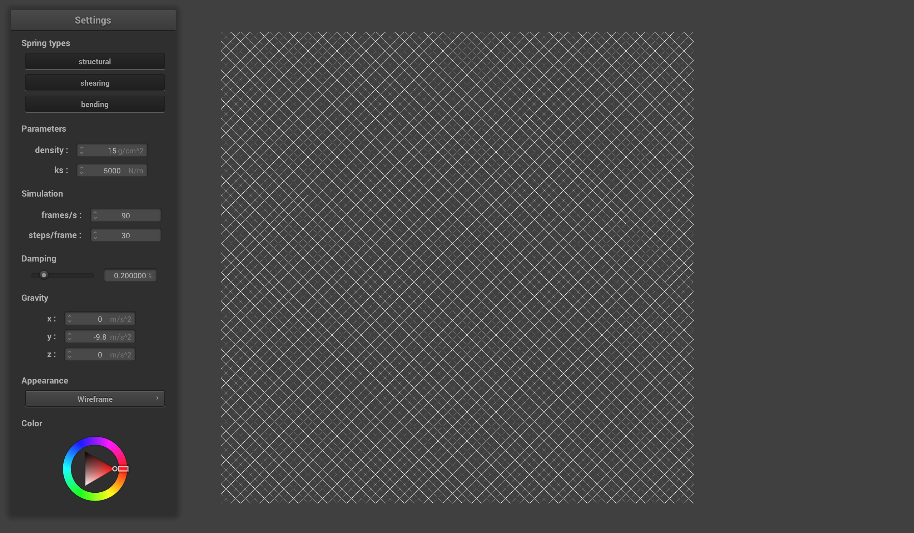
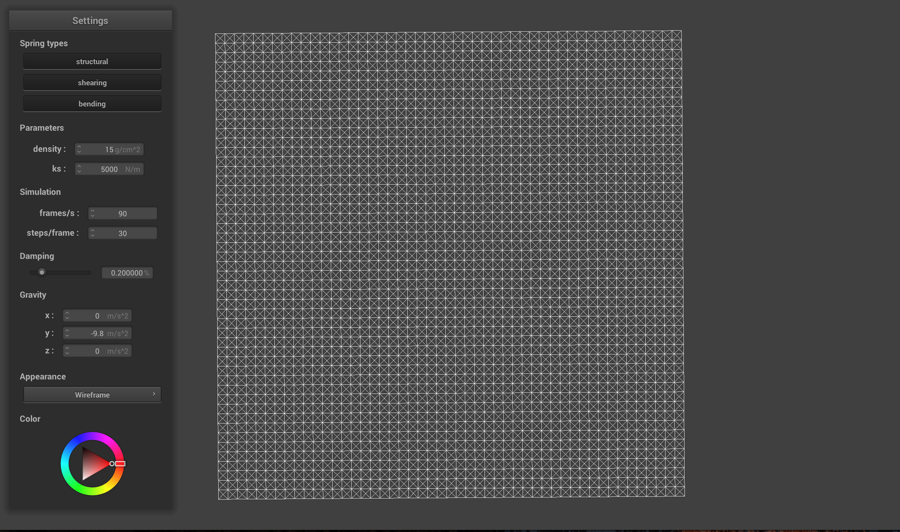
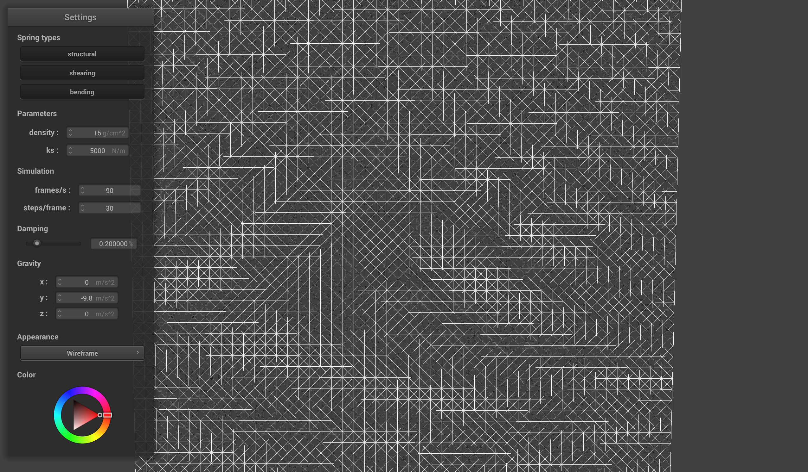
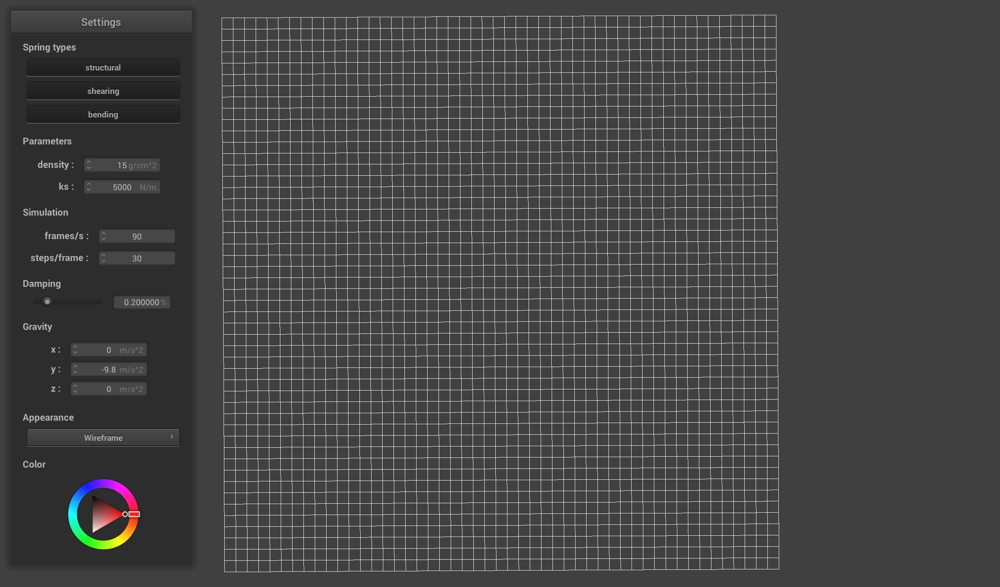
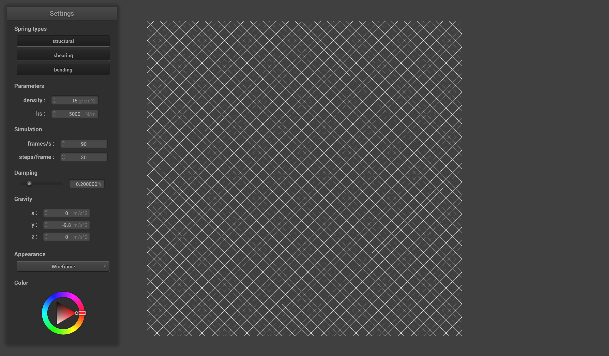

Part 1
Masses and Springs
Results!
Wireframe
Wireframe
Without Shearing
Only Shearing
With All
Wireframe
Wireframe
Without Shearing
Only Shearing
Observations
Using row major form, we first populate our mesh with point masses in different orientations, depending on whether we are in horizontal or vertical orientation. We then add springs to the mesh, but we pay attention to the different types of constraints. One problem that I ran into while creating the mesh was accessing into wrong/illegal indices, while accounting for the constraints, because we need to connect different point masses from different rows and columns.
- © Untitled
- Design: HTML5 UP
Using row major form, we first populate our mesh with point masses in different orientations, depending on whether we are in horizontal or vertical orientation. We then add springs to the mesh, but we pay attention to the different types of constraints. One problem that I ran into while creating the mesh was accessing into wrong/illegal indices, while accounting for the constraints, because we need to connect different point masses from different rows and columns.
- © Untitled
- Design: HTML5 UP